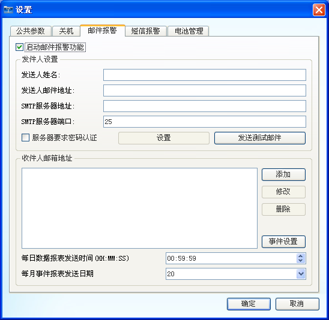
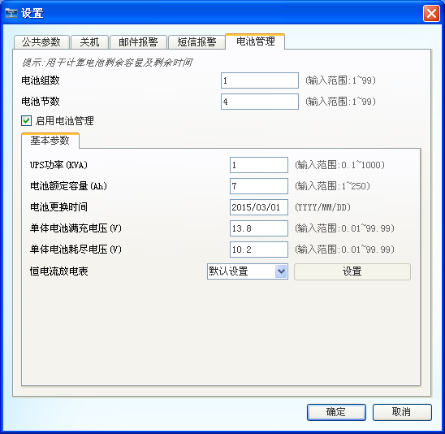

UPSmart使用手册
设置
1. 公共参数
设置UPS的通信模式以及设置一些其他与软件有关的参数。
图1：公共参数设置
2. 关机
设置软件关闭操作系统的条件以及在关闭操作系统时进行的一些操作，例如,保存文档等操作。
图2：关机设置
3. 电子邮件
设置电子邮件报警的功能。

图3：电子邮件设置
4. 短信报警
设置短信报警的功能，本功能的实现需要外接短信模块，否则此功能无法使用。
图4：短信报警设置
5. 电池管理
针对没有计算电池剩余容量和剩余时间的UPS，此功能可以帮助UPS计算此两项功能。

图5：电池管理设置
注：电池管理功能只能作为一种辅助功能，计算结果并不会完全准确。